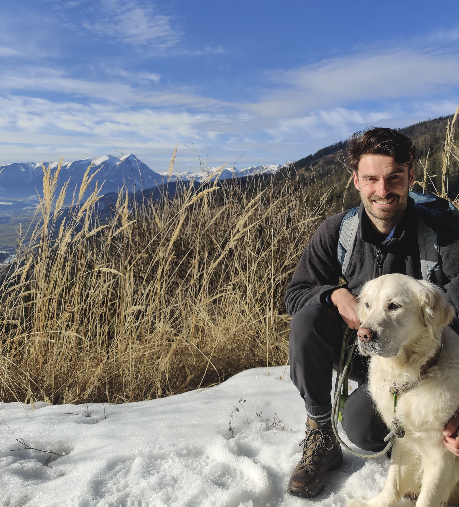

 📸 from a recent trip to Austria. When I'm away from my laptop, I enjoy spending time in the ocean—surfing, swimming, and sailing. I also like running and cycling, especially to pubs or coffee shops.